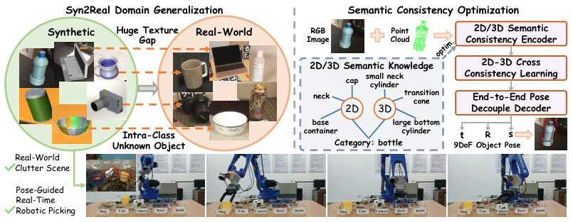
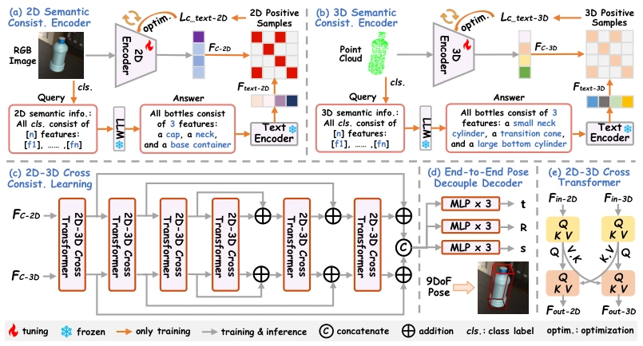
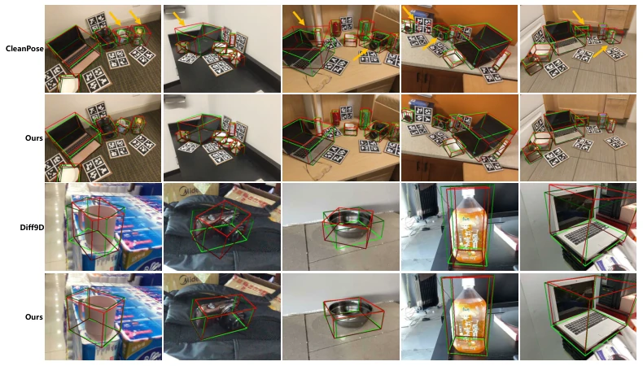
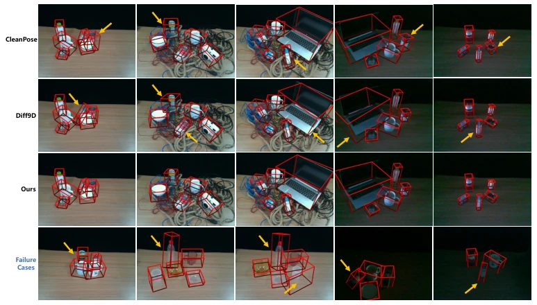

This paper attempts to use LLM-generated 'semantic commonsense' to counteract the sim-to-real texture gap, a rather clever approach. Although it outperforms CleanPose and Diff9D in the tables, relying on LLM-generated descriptions raises concerns: what if the LLM hallucinates? Furthermore, the authors themselves admit that handling symmetric objects is a weakness, which is a critical flaw in industrial grasping. However, it excels in being lightweight, running without issues on robots with 6GB VRAM, counting as a practical engineering patch, though still distant from true general perception. More interestingly, it completely discards CAD model priors, relying purely on data-driven methods, which is very friendly to resource-constrained robot platforms. But the cost is that if the object structure is too abstract, the LLM-generated semantics may be inaccurate, causing the model's 'inference' to fail.
Category-level Pose Estimation (COPE) can generalize to unknown objects of the same category, but existing methods mostly rely on large amounts of real data annotations [23, 24, 25], limiting scalability. Although synthetic data is inexpensive, texture differences lead to significant domain gaps [2]. Existing feature extractors mostly focus on fine-grained textures, lacking domain invariance [31, 32]. GenCOPE aims to train using only synthetic data and directly generalize to real deployment, solving the annotation bottleneck. Furthermore, traditional methods often require shape priors [41], increasing manual costs, whereas GenCOPE, through semantic consistency learning, attempts to eliminate reliance on CAD libraries to achieve more general perception.

Figure 1: GenCOPE for real-world robotic picking. Left: synthetic-to-real (Syn2Real) domain- generalized task setting, which aims to achieve generalization between intra-class unknown objects from synthetic to real-world domains. Right: 2D/3D semantic consistency optimization for end-to-end pose regression, where the dashed box indicates that it is used for optimization only during training.
The framework inputs RGB-D images, which are segmented and fed into 2D/3D encoders. The core innovation is semantic consistency optimization: utilizing an LLM (e.g., Gemini-3) to generate category semantic descriptions (e.g., 'cap, neck, body'), converted to text features via CLIP. During training, visual features and text features are enforced to align (contrastive loss), mitigating texture sensitivity. Subsequently, modality information is fused through a 2D-3D Cross Transformer, and finally, a decoupled decoder regresses the 9DoF pose (translation, rotation, size). The architecture adopts ResNet18 and PointNet, using only global features to ensure real-time performance. Notably, semantic optimization is enabled only during training, with no text input during inference, guaranteeing deployment efficiency.

Figure 2: Overall workflow of GenCOPE. (a) and (b) illustrate the proposed 2D and 3D semantic consistency encoders, which impose training-time constraints to emphasize intra-class semantic invariances. (c) presents the proposed 2D-3D cross consistency learning module that fuses two-modal features, where the 2D-3D cross transformer architecture is detailed in (e). (d) denotes the end-to-end pose decouple decoder, which regresses the full 9DoF object pose.
Tested on REAL275 and Wild6D, trained solely on CAMERA25 synthetic data. Compared with CleanPose [52], Diff9D [65], etc., GenCOPE outperforms in both IoU3D and n°mcm metrics. In terms of efficiency, VRAM usage is 2.89GB, FPS reaches 40.68, superior to competitors. Ablation experiments prove that the semantic consistency loss and Cross Transformer module are essential. LLM replacement experiments show robustness to model selection. Additionally, in real robot scenarios, GenCOPE performs more stably under occlusion and lighting variations, demonstrating its generalization capability, although there are still failure cases in extreme scenarios such as transparent objects.

Figure 3: Qualitative results comparison with CleanPose [52] on REAL275 and Diff9D [65] on Wild6D. The red and green boxes denote the estimated and ground-truth results, respectively.

Figure 4: Qualitative comparison with CleanPose [52] and Diff9D [65] in real-world robotic scenarios.